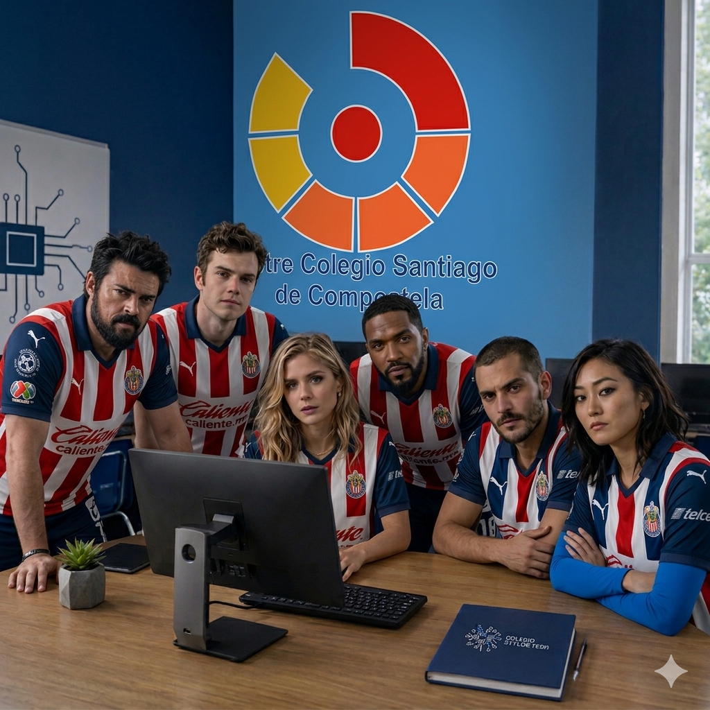

Somos estudiantes de cuarto semestre de nivel medio superior, pertenecientes a la capacitación en
informática (CP TICS) de nuestra institución. Nos especializamos en el uso de herramientas digitales
enfocadas al desarrollo web, programación básica y creación de contenido tecnológico.
Este proyecto fue desarrollado como parte de nuestra formación académica, con el objetivo de aplicar de
manera práctica los conocimientos adquiridos en clase. A través del uso de lenguajes como HTML y CSS,
diseñamos y estructuramos esta página web, cuidando tanto su funcionalidad como su presentación visual.
El proceso de elaboración incluyó la planeación del contenido, la organización de ideas, el diseño de la
interfaz y la implementación del código. Todo esto fue realizado de forma colaborativa, fomentando el
trabajo en equipo y la resolución de problemas.
Decidimos realizar este proyecto porque reconocemos la importancia de la tecnología en la actualidad,
especialmente en el ámbito educativo y profesional. Nuestro propósito es desarrollar habilidades que nos
permitan enfrentar los retos del mundo digital y contribuir con soluciones innovadoras.
Como estudiantes de informática, buscamos seguir mejorando nuestras capacidades y demostrar que los jóvenes
tenemos el potencial de crear proyectos significativos mediante el uso de las Tecnologías de la Información
y la Comunicación.
